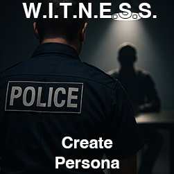

Persona files *must* include the persona type (witness or suspect), full name, date of birth, home address, interview instructions and persona prompt, in order to be considered a valid file. Other details that you add in here will make the interview more realistic and rewarding for those that conduct an interview using this persona.
If you leave significant details out from the persona file, there is no guarantee that the interview will flow well or produce realistic results. Take time and care with the details you provide. Be sure to test the persona file using the Conduct Interview feature on the Home page, then use Edit Persona to make any adjustments necessary to achieve a realistic interview outcome.